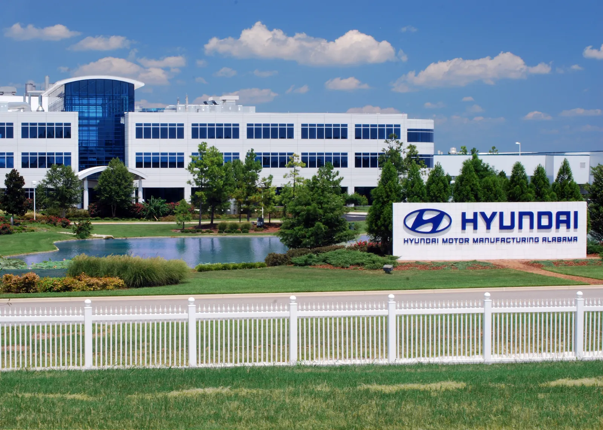
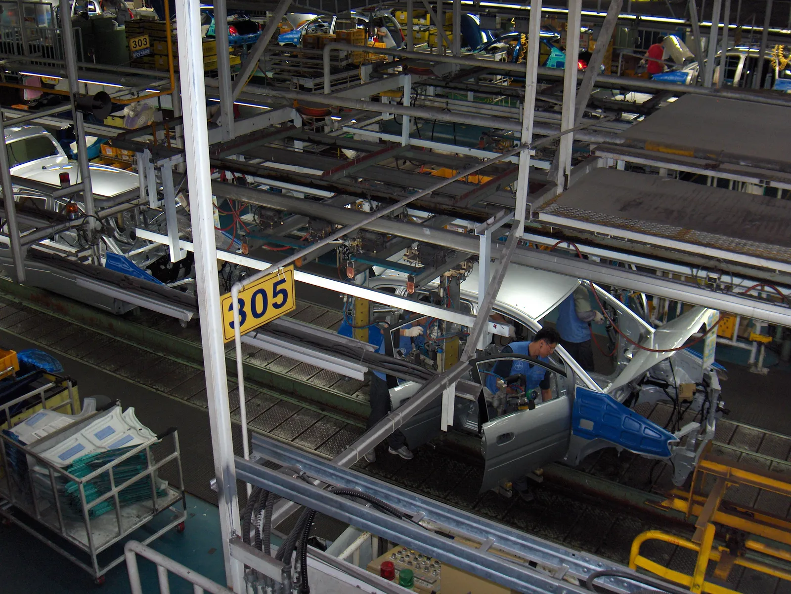
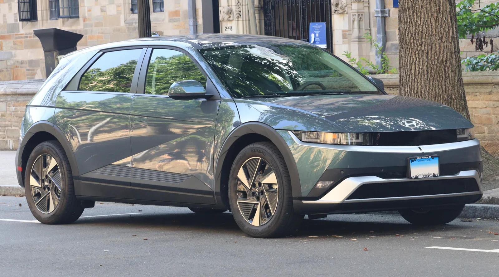

▲ 미국 앨라배마 현대차 공장(HMMA). 이번 협의체에는 미주 지역 안전 리더도 참여했다 ⓒ Wikimedia Commons
12개국, 40여 명. 현대차의 안전 담당 리더들이 창사 이래 처음으로 한자리에 모였다.
현대자동차가 글로벌 통합 안전 협의체(Global One Safety Council, GOSC)를 출범시키고 9월 16일부터 18일까지 사흘간 첫 컨퍼런스를 열었다. 미주·유럽·인도·아시아태평양·중국 등 각 지역법인의 안전 담당자들이 처음으로 한데 모여 현장을 공유했다는 점에서, 단순한 행사를 넘어 현대차의 안전 관리 체계 자체가 새로운 단계로 넘어가는 신호로 읽힌다. 무엇을 논의했고, 왜 지금 이런 조직이 필요했는지 짚었다.
1. 글로벌 통합 안전 협의체(GOSC)란
GOSC는 현대차 전 세계 사업장의 안전 담당자들이 소통하기 위해 새로 만들어진 글로벌 협의체다. 그동안 각 지역법인은 저마다의 방식으로 안전관리를 해왔지만, 이번 협의체 출범으로 전사 차원의 통합 커뮤니케이션 채널이 처음 생긴 셈이다.
현대차는 이번 협의체 구성을 두고 "모든 안전 리더가 한 자리에 모이는 것은 이번이 처음"이라고 밝혔다. 그만큼 이번 출범이 조직적으로도 상징적인 이벤트라는 의미다.
▲ 미국 앨라배마 현대차 공장(HMMA). 이번 협의체에는 미주 지역 안전 리더도 참여했다 ⓒ Wikimedia Commons
2. 누가, 어디서, 무엇을 논의했나
협의체를 총괄한 인물은 최영일 안전보건최고책임자(부사장)다. 그의 지휘 아래 한국, 미주, 유럽, 인도, 아시아태평양, 중국 등 12개국의 안전 리더 약 40명이 이번 컨퍼런스에 참석했다.
행사는 사흘에 걸쳐 세 단계로 구성됐다. 9월 16일 '글로벌 안전 세션'에서는 전사 차원의 안전 전략과 실행 방안을 논의했고, 9월 17일 '브랜드 세션'에서는 안전관리가 기업 신뢰도로 이어지는 흐름을 되짚었다. 마지막 9월 18일 '현장 안전 세션'에서는 울산 공장을 찾아 실제 안전 여건과 기술을 직접 점검했다.
| 일자 | 세션명 | 주요 내용 |
|---|---|---|
| 9월 16일 | 글로벌 안전 세션 | 글로벌 안전 전략 및 실행 방안 논의 |
| 9월 17일 | 브랜드 세션 | 안전관리와 기업 신뢰도의 연결고리 점검 |
| 9월 18일 | 온사이트 안전 세션 | 울산 공장 현장 안전 여건·기술 체험 |

▲ 완성차 조립라인 현장. GOSC 마지막 세션은 울산 공장에서 실제 안전 여건을 직접 점검하는 방식으로 진행됐다 ⓒ Wikimedia Commons
3. 왜 만들었나 — "우수 사례를 수평 전개하자"
GOSC가 내세우는 핵심 취지는 '수평 전개'다. 현대차 설명에 따르면 각 권역에서 이미 검증된 우수 안전 사례를 다른 모든 사업장으로 공유하고 확산시키는 것이 협의체의 1차 목표다. 지금까지는 지역법인별로 안전관리 노하우가 개별적으로 쌓여왔다면, 앞으로는 이를 전사 차원에서 표준화하겠다는 구상이다.
📍 "안전은 곧 기업 신뢰도"
현대차는 이번 협의체 출범과 관련해 안전 관리 수준이 곧 기업에 대한 신뢰로 직결된다는 점을 강조했다. 글로벌 톱 티어 완성차 브랜드로서 경쟁력을 유지하려면, 판매량이나 상품성 못지않게 임직원과 생산 현장의 안전이 핵심 가치가 돼야 한다는 문제의식이 반영된 결과다.
배경에는 현대차의 글로벌 생산 규모 확대도 있다. 국내 울산 공장뿐 아니라 미국 앨라배마(HMMA), 체코 노소비체 등 세계 각지에 대규모 생산기지를 운영하면서, 각 지역의 안전 기준과 관행을 하나의 틀로 묶어낼 필요성이 꾸준히 제기돼 왔다.

▲ 체코 노소비체의 현대차그룹 생산단지. 유럽 지역 역시 이번 GOSC 참여 권역에 포함됐다 ⓒ Wikimedia Commons
4. 왜 지금인가 — 커지는 글로벌 생산망과 전동화 전환
현대차가 지금 시점에 이런 조직을 만든 데는 두 가지 흐름이 겹쳐 있다. 하나는 생산기지의 지리적 확장이다. 국내외 공장이 늘어날수록 사업장마다 규제 환경과 작업 방식이 달라지고, 안전 기준을 통일적으로 관리하기 어려워지는 구조적 문제가 커진다.
다른 하나는 전동화 전환에 따른 생산 공정 변화다. 배터리 취급, 고전압 시스템 등 기존 내연기관 중심 공정과는 다른 안전 리스크가 새롭게 부상하면서, 전동화 라인이 늘어나는 지역법인일수록 최신 안전 노하우를 신속히 공유받을 필요성이 커졌다. 아이오닉 5 등 순수전기차 라인업 확대가 이런 흐름과 맞물려 있다.
✅ GOSC 출범이 갖는 의미
· 최초의 전사 통합 안전 채널 — 지역법인별 개별 관리에서 전사 표준화 체계로 전환
· 임원급 컨트롤타워 — 안전보건최고책임자(부사장)가 직접 지휘
· 현장 중심 운영 — 회의실이 아닌 울산 공장 현장에서 마지막 세션 진행
· 전동화 공정 대응 — 배터리·고전압 시스템 등 새로운 안전 리스크 공유 필요성 반영
5. 관전 포인트 — 협의체가 실제로 무엇을 바꿀 수 있을까
관건은 이 협의체가 일회성 행사에 그치지 않고 실질적인 변화를 만들어낼 수 있느냐다. 현대차는 이번 컨퍼런스를 시작으로 지역별 안전 사례를 지속적으로 공유하는 상시 채널로 GOSC를 운영하겠다는 방침이지만, 구체적인 후속 회의 주기나 성과 측정 지표는 아직 공개되지 않았다.
다만 최고경영진이 직접 챙기는 전사 안전 협의체가 처음 만들어졌다는 사실 자체가 의미 있는 출발점이라는 평가가 많다. 특히 전동화·소프트웨어 중심으로 산업이 재편되는 시기에, 생산 현장의 안전관리 체계를 함께 정비하려는 시도로 볼 수 있다.
현대차그룹의 관련 소식은 공식 뉴스룸에서 확인할 수 있다. 현대자동차그룹 뉴스룸 바로가기

▲ 현대차의 순수전기차 아이오닉 5. 전동화 라인 확대는 새로운 안전관리 수요를 만들어내는 배경 중 하나다 ⓒ Wikimedia Commons
6. 요약
현대자동차가 12개국 약 40명의 안전 리더가 참여하는 '글로벌 통합 안전 협의체(GOSC)'를 출범시키고, 9월 16일부터 18일까지 첫 컨퍼런스를 열었다. 안전보건최고책임자(부사장)가 총괄하며, 모든 안전 리더가 한자리에 모인 것은 이번이 처음이다.
협의체의 핵심 목표는 지역별 우수 안전 사례를 전 사업장에 수평 전개하고 안전관리 수준을 표준화하는 것이다. 마지막 세션은 울산 공장에서 진행되며 현장 중심 운영을 강조했다.
글로벌 생산기지 확대와 전동화 전환에 따른 새로운 안전 리스크가 맞물리며 이런 조직이 필요해졌다는 분석이 나온다. 앞으로 협의체가 상시 채널로 자리잡아 실질적 변화를 만들어낼 수 있을지가 관전 포인트다.